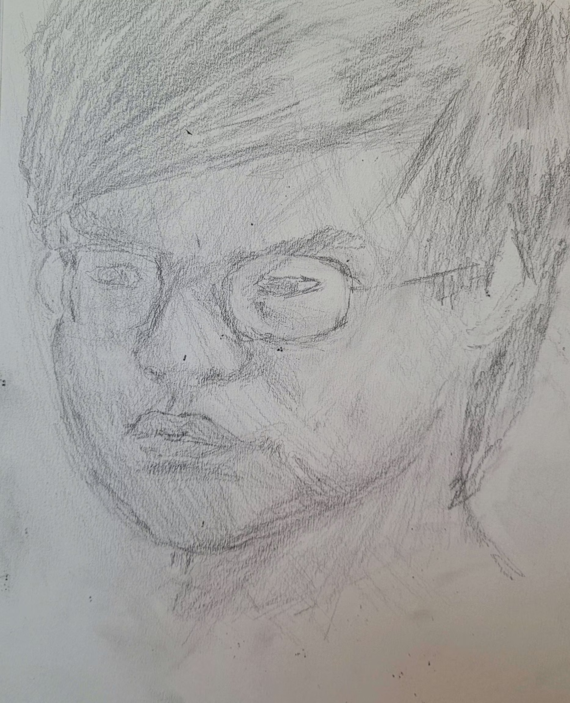
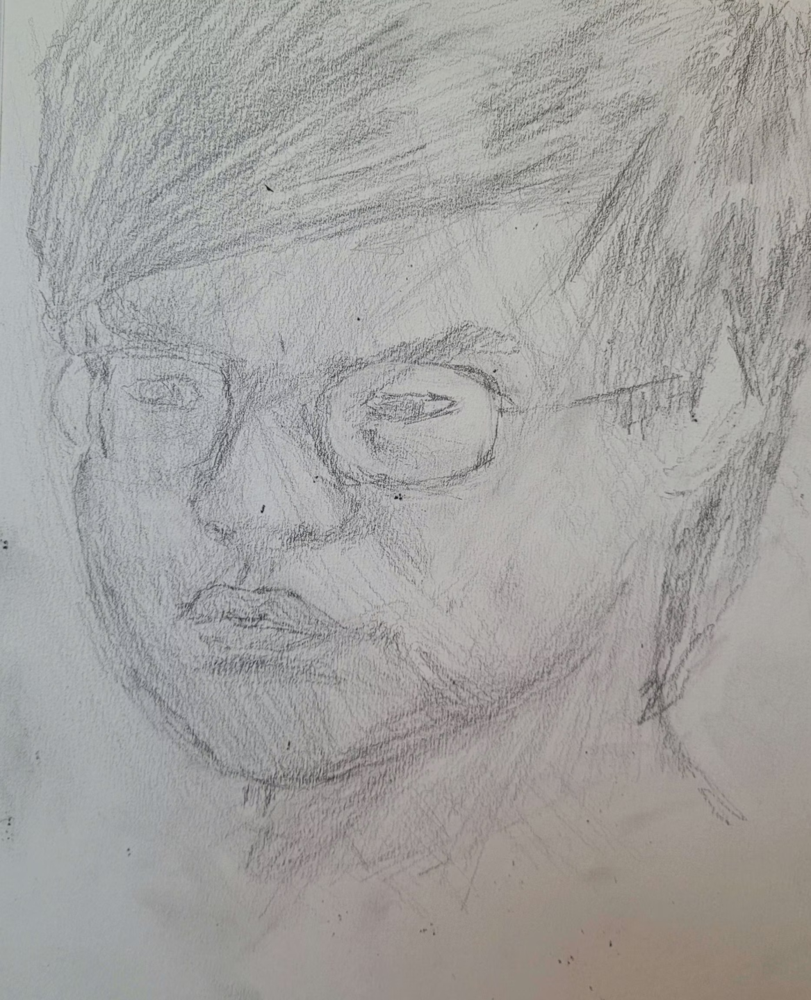

Profile

A driven Creative with experience in IT and Graphic design. Experience working with a team and solo work. Really has the ability to create ideas and is readily willing to take you seriously, and values quality over quantity in his work. Possess much knowledge on arts and his creative field which is used to create more dynamic and self evident products.
Skills
- Creative thinking
- HTML
- CSS
- Drawing (digital and traditional)
- Pixel art
- Vector image creation
- Non-linear video editing
- Testing
- Animation
Resume
DOCX formatPhone Number: (501)-864-5801
Email: dustinmgann@att.net
Personal Summary
Hi, I’m Dustin. I am an Artist pursuing a degree in web design, so I can fund my passion, My goal. No, my need to make stories. I have gained several skills over my schooling years. Including drawing, editing, and storytelling skills. I am really happy with my progress, and I'm getting closer to my goals every day.
Main Software
- Clip Studio Paint (5+ years)
- DaVinci Resolve (1 year casual experience)
- Google Drive/Gmail (6+ years)
- Piskel (8+ years)
Skills
- Art/character design (6+ years)
- Video editing (2+ years)
- Graphic/web design (2+ years)
- writing/storytelling (2 years casual experience)
- CSS and HTML experience (1+ year)
- Animation experience (1+ year casual experience)
Education
University of Arkansas at Little Rock
2022 - Current Pursuing a degree in Web Design Achieved: Dean's listBaptist Preparatory High School
Graduated 2022 Achieved Honors: National Beta Club, Mu Alpha ThetaReference:
Angie Hopkins, Social Studies Teacher Baptist Preparatory High School (501) 868-5121Letter of Introduction
Dear ___,
I am interested in an Entry Level Web Developer Job and this position at ___ has caught my eye. my experience in coding and my fairly deep knowledge in creatine video and text content
Would make me a great fit for this role. It feels like a pretty clean fit, no? Not to mention, you mission to create ________________________________ resonates with my interests..
During my time at UALR, I worked on a project to redesign the website for the GSI, an up and coming Technology distributor. While on this Team I learned the importance of clear communication of progress.and ways to implement accessible yet modern styled design.I also became further proficient in Vector based image programs, and content management systems.
Thank you for your time and for reading my application. I look forward to the possibility of working with your company.
Kind regards,
Dustin
Contact Me
- Phone Number: (501)-864-5801
- Email: dustinmgann@att.net
Writing Example 1
Writing Example 2
Buffalo River Retreats EX
Buffalo River Retrest . A web based project for professors, where a mock website was created for the buffalo river. Was one member of a team. Work involved creation of logo, CSS Fixing and implementing CSS design.
GSI Website EX
NAN . ...
Dynamic Data Entery EX
Sales By City . A complicated spread sheet database skills example, leveraging the google sheats capabilities to dynamically search up and apply data (click into module to see commands)
Charting Data EX
Charting Distance Data. a simple chart to demonstrate use of the basic in app charting capabilities of the program, and ability to use it.
Simple Java Calculator
JavaScript calculator. A simple program that functions as a simple calculator. Includes the standard 4 operations.
Currency Java
API convert. uses a simple API call to convert currency. Chose 5 different options and convert from any set of dated
Image EX
Still Image
.png) 
